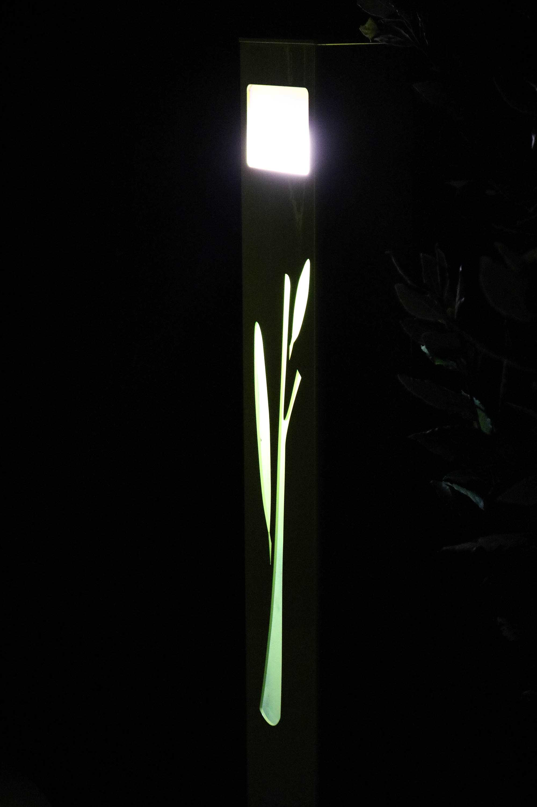
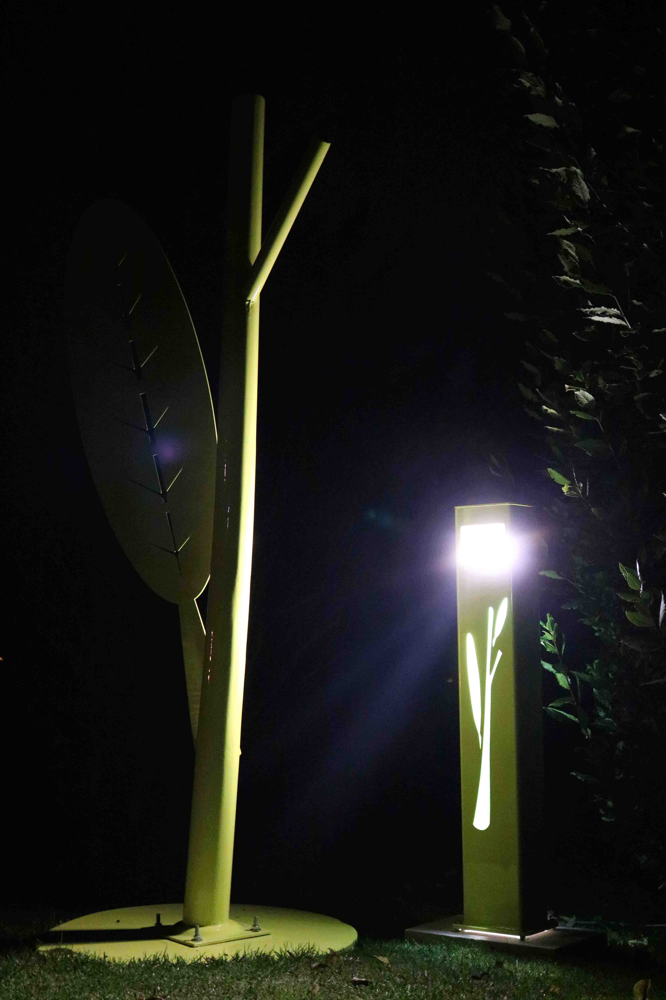

JAUNE POUSSE
SYMBIOSE
Cette série d’œuvres vous ouvre les secrets du jardinier celui de toute ses merveilles qui se cachent dans les détails afin de créer un ensemble harmonieux.
Le sculpteur lui aussi, observe la nature l’organise la transfigure pour trouver cette même harmonie.

Hymne à la nature et à son pouvoir régénérateur, la pousse est le premier signe de la régénérescence de la nature après le bourgeon hivernal.
La plante tend ses premières feuilles vers la lumière. C’est cette énergie que nous désirons mettre en avant. La couleur indique la fonction, celle de la photosynthèse qui via la chlorophylle ferras verdir nos jardin.
La couleur tendre, légèrement acidulée, nous plonge dans un printemps permanent.

